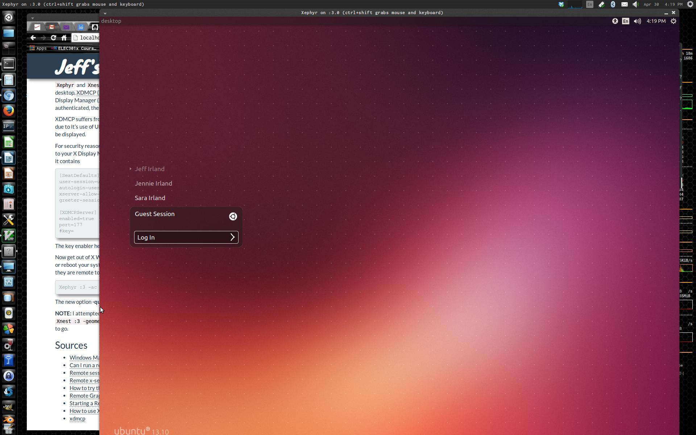

You might want to run one X Window System desktop environment on your local computer while accessing second computer,
including its own desktop environment,
all the while using the first computer’s screen and keyboard.
This sounds like multiple X Servers running.
One for the monitor and the other managing a graphics window as if it were a second monitor.
Fortunately, X Window System provides tools to do exactly this.
This has been done by designing a X Client to emulate an X Server that then provides display services to other clients.
The open-source clients that do this are called Xnest and Xephyr.
And this display within a window concept is known as "X nesting".
My Native Desktop Environment
For my X Window System, I'm running Lightweight X11 Desktop Environment (LXDE)
which has lxdm as its X Display Manager (aka GUI Login Manager),
nd uses lxsession as it X Session Manager,
and the Metacity X Window Manager.
In the examples below, I sometimes use other components to demonstrate the robustness of the approach.
Specifically, I'm using the Awesome X Windows Manager
This can be load with the following:
sudo apt-get install awesome awesome-extra
Xnest
Xnest is a Display Server implementing the X11 display server protocol that outputs to a window,
as apposed to a X display.
Xnest is a standard part of the XFree86 and X.org X Servers,
and provides an X Server that runs inside a standard X Window.
In other words, Xnest opens a window that works like another screen in which the user can open windows, etc.
At the X Protocol level, Xnest works like a X Client of the X Server hosting the window,
and as a X Server with respect to the X Window Manager
(i.e. applications that opens windows) within the Xnest session.
Therefore, Xnest can be used to run a virtual desktop of another computer
(which is running X Window) within a window.
Xnest might come pre-installed in the Ubuntu X Window System
but it's easy to install and is easy to use.
Simply install the package. No special configuration is require.
sudo apt-get install xnest
Simple Test of Xnest
To open a window containing a new X Display (i.e. display :3) and running xclock,
execute the following commands in an xterm.
Xnest :3 -geometry 1280x1024+200+200 -name "Xnest Test Window" 2> /dev/null & xclock -display :3 &
The options have the following purpose:
- :3 is your display (displays are numbered starting with 0)
- -geometry 1280x1024+200+200 sets the window size and position
- -name "Xnest Test Window" is the title of the Xnest window
- 2> /dev/null redirects trace and error messages
In the above, there isn't a window manager.
To include a window manager, you simple need to start one up, but again, within display :3.
And you can tile on a xterm and the xeye.
DISPLAY=:3 awesome & DISPLAY=:3 xterm & DISPLAY=:3 xeyes &
Xephyr
For this discussion, you can think of Xephyr as an improved Xnest.
Also, the use of the Xephyr X Server instead of Xnest is generally recommended.
You can install Xephyr with the following.
sudo apt-get install xserver-xephyr
Simple Test of Xephyr
To open a Xephyr window with a specific size and suppress trace / error messaging,
do the following:
Xephyr -ac -screen 1280x1024 -br -reset -terminate 2> /dev/null :3 &
The options have the following purpose:
- :3 is your display (displays are numbered starting with 0)
- -ac disable access control restrictions (allow you to forward X)
- -screen 1280x1024 sets the window size
- -br set the background to black
- -reset reset after last client exists
- -terminate terminate
Xephyrat server reset (does not always work) - 2> /dev/null redirects trace and error messages
To add a xterm into another account and the GNOME Window Manager, you could do the following:
Xephyr -ac -screen 1280x1024 -br -reset -terminate 2> /dev/null :3 & DISPLAY=:3.0 gnome-wm & DISPLAY=:3.0 ssh -X jennie@desktop xterm
Or you could start a GNOME Desktop session, and this will being with it its display manager
Xephyr -ac -screen 1280x1024 -br -reset -terminate 2> /dev/null :3 & DISPLAY=:3 gnome-session & DISPLAY=:3.0 ssh -XfC jennie@desktop xterm
This doesn't give you the full desktop environment. The best way to do this is to go thought the X Display Manager (aka GUI Login Manager). This is shown below in the next section.
Remote Login
Xephyr and Xnest can also be used to remotely login to a desktop session.
When remotely starting a X Window System desktop,
XDMCP (X Display Manager Control Protocol) is typically used to establish
the connection between the remote X Display Manager (XDM) daemon
and the local X Server.
Once the connection has been established, and the user has successfully authenticated,
the XDM daemon launches the X client session, which is displayed on the user's workstation.
XDMCP suffers from some of the same security problem as all the X Protocols, but unfortunately, cannot be tunnelled over SSH due to it's use of UDP. Attempts to use XDMCP to connect to a remote system via SSH will fail and an error message will be displayed.
For security reasons,
XDMCP is not enabled by default on most modern UNIX distributions.
You will have to enable remote logins to your X Display Manager.
To enable XDMCP on my LXDE based system,
I configuring the file /etc/lightdm/lightdm.conf so it contains
[SeatDefaults] user-session=ubuntu autologin-user=false xserver-allow-tcp=true greeter-session=unity-greeter [XDMCPServer] enabled=true port=177 #key=
The key enabler here is the term enabled=true
(this is generally set to false for security purposes).
Now get out of X Window and restart the lightdm with sudo restart lightdm
(make sure to exit any running applications first)
or reboot your system so the changes take effect.
To log into into my Linux system (aka desktop),
from the same system as if they are remote to each other,
I used the following command works well.
Xephyr :3 -ac -screen 1280x1024 -br -reset -terminate -query desktop 2> /dev/null &
The new option -query desktop cause Xephyr to contact the host computer desktop via XDMCP.
A screen shot is shown below.

NOTE: When I attempted to do the same login screen (i.e. Display Manager) with Xnest via the command
Xnest :3 -geometry 1280x1024+200+200 -query desktop &
and found that it didn't fully work.
Appears Xephyr is the way to go.
Sources
- Windows Managers vs Login Managers vs Display Managers vs Session Manager vs Desktop Environment
- Can I run a remote X session in windowed mode?
- Remote sessions via XDMCP
- Remote x-server with ssh -X
- How to try the GDM login screen in many resolutions
- Remote Graphical Desktops and XDMCP
- Starting a Remote X session using XDMCP
- How to use XDMCP+GDM and Xnest?
- xdmcp